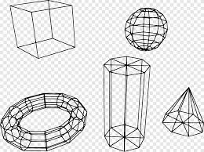

Projects
Main Project

Models
Select various models by type : Primative, Procedural, From Files, From User

Primatives
Primatives
Animations
Simple rotation, translation scale bones and IK rigging

Select various models by type : Primative, Procedural, From Files, From User
Simple rotation, translation scale bones and IK rigging